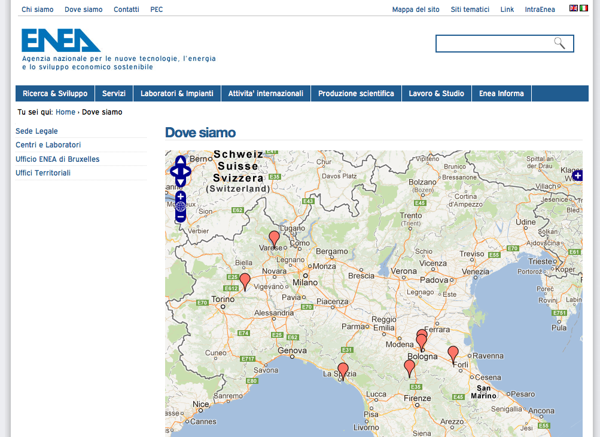
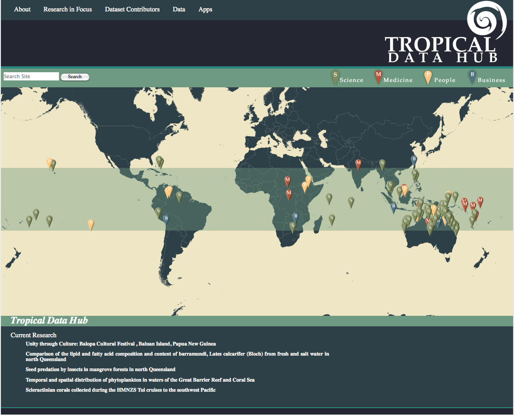
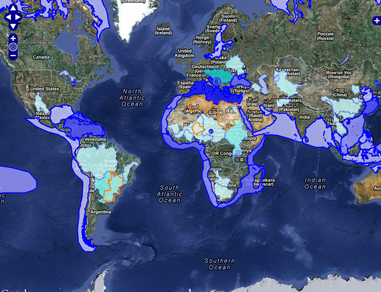
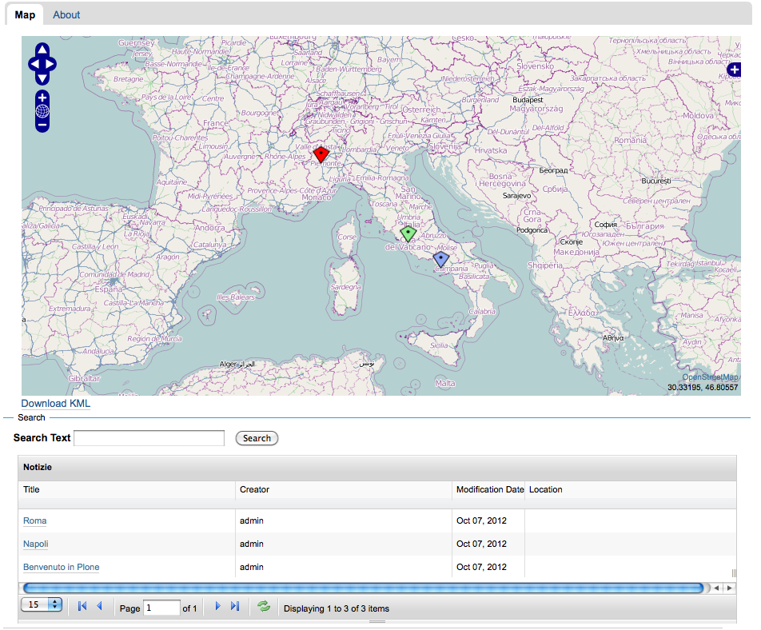
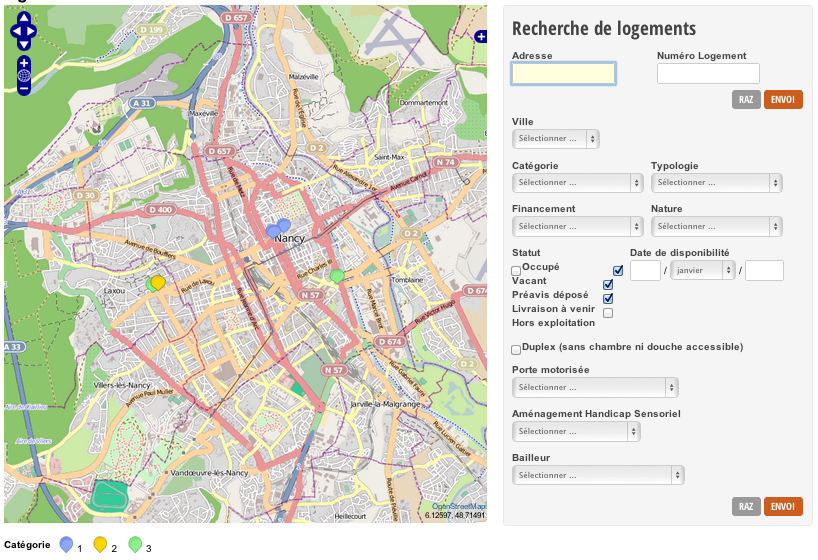
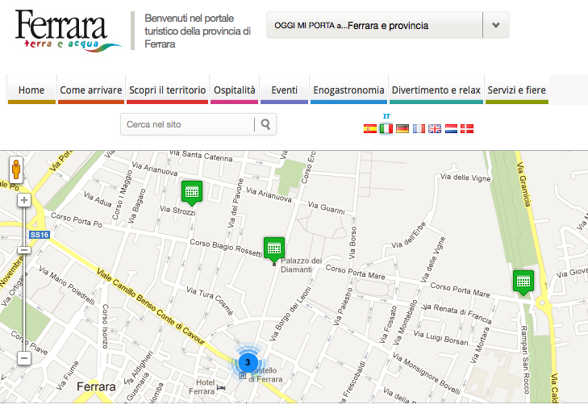
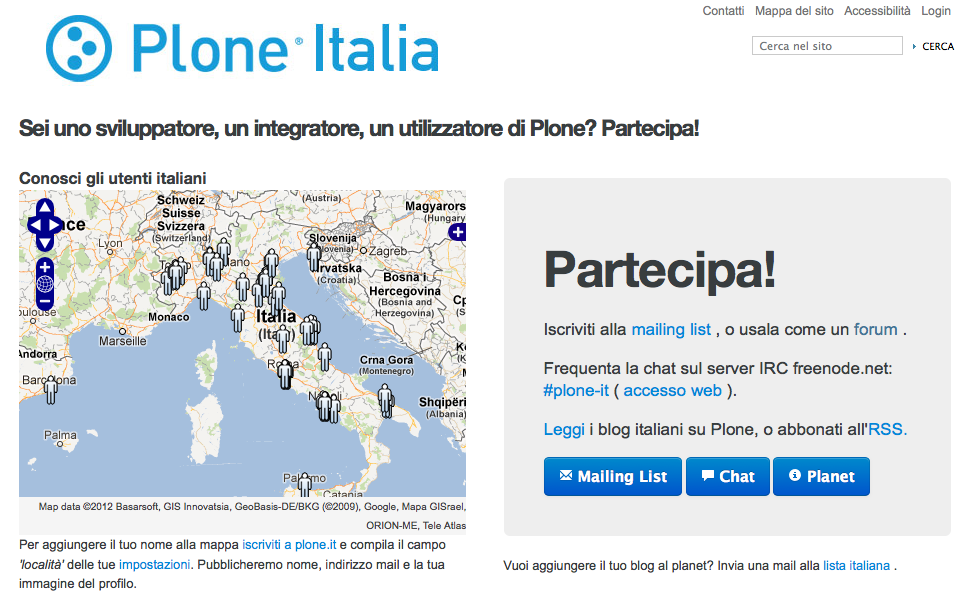
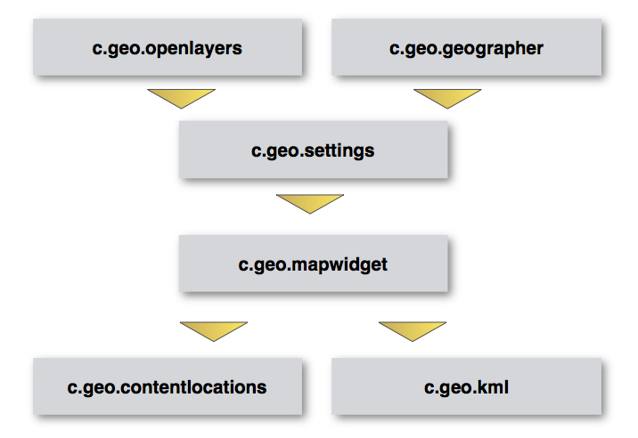
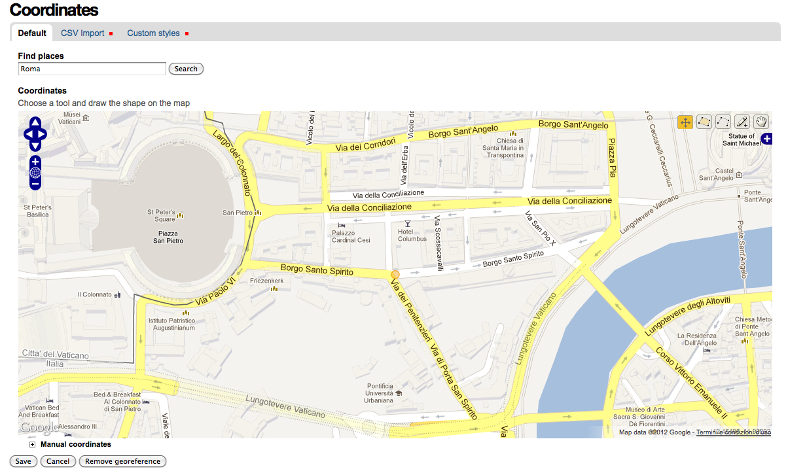

Where is my content?
Geo-referencing content types in Plone with collective.geo
Where is my content? — Giorgio Borelli
Abstract
Who am I?
I'm senior developer and project manager with Abstract since 2011
I have been working with Plone since 2007
During the last years I have gained experience with various Python web development frameworks
Where is my content? — Giorgio Borelli
Abstract
Web maps: when, why and how
Complex and specialized GIS application
Maps are the central part of the app
Panoramio
Foursquare
Only-apartments
Geo-referenced CMS
Where is my content? — Giorgio Borelli
Abstract
What is collective.geo
In 2008 I faced two problems
learning Plone 3 and the Zope component architecture
put a lot of contents on a map
Where is my content? — Giorgio Borelli
Abstract
What if c.geo was not there
Plone products
Products.Maps
Products.ATGoogleMaps
redturtle.maps.core
raptus.article.map
Cons
specific for Archetypes
can only georeference points
can only use Google Maps
developed for a specific project
Where is my content? — Giorgio Borelli
Abstract
collective.geo manifesto
modular and easily extendable up to date and taking advantage of ZCA not related to a specific map service
Where is my content? — Giorgio Borelli
Abstract
Use cases
Where is my content? — Giorgio Borelli
Abstract
Use the location field
ENEA
We can use the location field of a content-type to geo-locate the offices of a company
Archetypes
collective.geo
http://www.enea.it

Where is my content? — Giorgio Borelli
Abstract
Dexterity content types TTW
Tropical Data Hub
We can assign collective.geo Maps behaviour to a Dexterity content-type in order to make it geo-referenceable
Dexterity
collective.geo.behaviour
http://tropicaldatahub.org/

Where is my content? — Giorgio Borelli
Abstract
Not only points

Where is my content? — Giorgio Borelli
Abstract
Flexitopic
We can aggregate geo-referenced contents with a Plone collection and, with flexitopic, we can show the results on a table and paginate them
collective.flexitopic
c.geo.flexitopic

Where is my content? — Giorgio Borelli
Abstract
More customizations
AORIF
The modular structure of collective.geo allows us to customize it in a simple way
On saving a content we can geolocate its address and show it on a map. The user doesn't need to know the coordinates neither to use a complex UI.

Where is my content? — Giorgio Borelli
Abstract
Backend/frontend

Where is my content? — Giorgio Borelli
Abstract
Plone.it - users' map
We can also view the portal users in a specific map
With a portlet we can include the map in a different context such as a landing page.
http://plone.it/partecipa

Where is my content? — Giorgio Borelli
Abstract
Looking for my content
Inside Plone
External catalogs
when an object is geo-referenced
an event is fired by
collective.geo.geographer
<subscriber
handler=".MySubscriber"
for="IObjectGeoreferencedEvent"
/>
Where is my content? — Giorgio Borelli
Abstract
collective.geo under the hood
Where is my content? — Giorgio Borelli
Abstract
The core of collective.geo
Dependencies
Shapely
libgeos_c
geopy
BeautifulSoup
Installation
[buildout]
extends = http://dist.plone.org/release/4.2.1/versions.cfg
eggs =
collective.geo.bundle
BeautifulSoup
...
Note: Shapely dependency will be removed in the next release
Where is my content? — Giorgio Borelli
Abstract
collective.geo structure

Where is my content? — Giorgio Borelli
Abstract
collective.geo.openlayers
Includes the javascript library Openlayers in Plone and some other javascripts that are useful for managing maps in collective.geo
layer = new OpenLayers.Layer.Google(
'Google maps',
{
'sphericalMercator':true,
numZoomLevels:20
}
)
Where is my content? — Giorgio Borelli
Abstract
collective.geo.geographer
based on zgeo.geographer and zgeo.plone.geographer
provides the basic mechanism to enter geographic data into georeferenceable contents
any object can be georeferenced
>>> class Placemark(object):
... implements(
... IGeoreferenceable,
... IAttributeAnnotatable
... )
>>> placemark = Placemark()
>>> geo = IGeoreferenced(placemark)
>>> geo.setGeoInterface('Point',
... (-105.08, 40.59))
Where is my content? — Giorgio Borelli
Abstract
collective.geo.settings
store default settings for collective.geo
map center
zoom level
which layers have to be shown on the map
which contents can be georeferenced
default styles for all features
Where is my content? — Giorgio Borelli
Abstract
collective.geo.mapwidget
manages the mechanism that handles Openlayers maps in Plone
each map widget is a Zope component which contains a series of layers
all the maps in collective.geo are composed by one or more map layers and each layer returns a javascript snippet by a page template which contains all information about the layer itself
Where is my content? — Giorgio Borelli
Abstract
collective.geo.mapwidget
>>> from collective.geo.mapwidget import maplayer
>>> class BingStretMapLayer(maplayer.MapLayer):
... name = u"bing_map"
... Title = _(u'Bing Streets')
... type = 'bing'
... jsfactory = """
... function() {
... return new OpenLayers.Layer.VirtualEarth('%s',
... {'type': VEMapStyle.Shaded,
... 'sphericalMercator': true});
... }""" % Title
<metal:layer
use-macro="context/@@collectivegeo-macros/map-widget" />
collective.geo.contentlocations
user interface for georeferencing Archetypes content types
data can be inserted in WKT format
geocoding with geopy
it is possible to set customized styles

Where is my content? — Giorgio Borelli
Abstract
collective.geo.kml
registers a kml view on the georeferenced objects and on folderish contents such as Folders and Collections.
the KML file can be used on external services like
Google Earth/Maps
Where is my content? — Giorgio Borelli
Abstract
Dexterity
collective.z3cform.mapwidget
it's a specific widget for z3c.form that allows to manage the geographic data in an easy way
collective.geo.behaviour
it's a Dexterity behaviour that allows to georeference contents and uses the annotations mechanism of collective.geo.geographer for registering data
Where is my content? — Giorgio Borelli
Abstract
More extensions
Where is my content? — Giorgio Borelli
Abstract
collective.geo.mapcontent
Where is my content? — Giorgio Borelli
Abstract
collective.geo.file
it provides a view for KML , KMZ (Keyhole Markup Language) and GPX (GPS eXchange Format) files.
The view renders the file in a openlayers Map using the collective.geo library.
Where is my content? — Giorgio Borelli
Abstract
Conclusion
Where is my content? — Giorgio Borelli
Abstract
Contributors
Sean Gillies
Silvio Tomatis - silviot
Gerhard Weis - gweis
David Breitkreutz - rockdj
Makina corpus
Christian Ledermann - nan
David Beitey - davidjb
Maurizio Delmonte - miziodel
Alice Narduzzo
Enrico Barra
Where is my content? — Giorgio Borelli
Abstract
Start
Slides
Time remaining
Notes
No notes
←
→